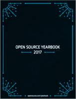

Esta página contiene enlaces a los números publicados de la revista Open Source Yearbook en 2019 - 2018 - 2017 - 2016.
Página web: Anuario Open Source Yearbook
Año 2018 - 2019 febrero
Descarga (PDF 5.2 MB, inglés)

Año 2017 - 2018 marzo
Descarga (PDF 10.6 MB, inglés)
Año 2016 - 2017 enero
Descarga (PDF 9.5 MB, inglés)
Año 2015 - 2016 marzo
Descarga (PDF 5.0 MB, inglés)